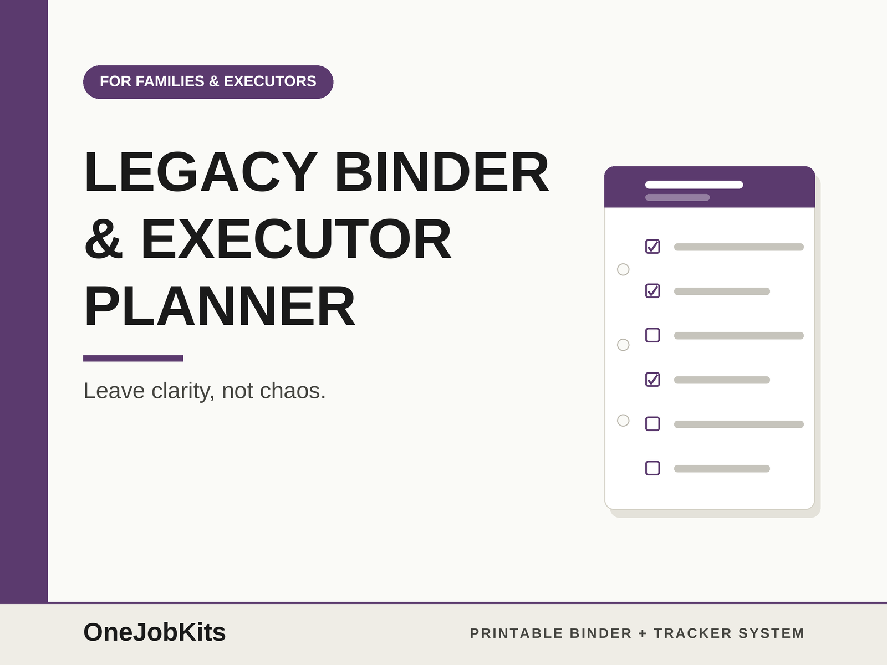

OneJobKits · Kit #4
Legacy / Executor Binder — end of life planner

If you searched for an end of life planner, ask the question it exists to answer: if something happened to you tomorrow, could the person you trust most find everything — the accounts, the insurance, the documents, your wishes — in one afternoon? For most families the honest answer is no, and the search takes weeks, during the worst week of their lives.
This binder is the fix, made while things are calm. This page gives you its first piece free, right here: the 48-hour document checklist that shows you what you have and what is missing. Below it is the full kit it comes from — an 87-page binder in twelve sections, plus the piece most binders do not have: an executor companion tracker that turns "the binder exists" into a task plan for the first 48 hours, the first two weeks and the first three months. It organises and records. It is not a will, and it is not legal advice.
Free download — start with the 48-Hour Document Checklist
The 48-Hour Document Checklist is a 4-page fillable PDF: the start-here document checklist plus the emergency contacts page from the full binder. Run down it in about ten minutes and a family can see what they have and what is missing — which documents exist, which are out of date, and which were never made.
Download the free 48-Hour Document Checklist (PDF)Get it on Gumroad instead
What the checklist does not do: it finds the gaps; it does not close them. The full binder below is where the accounts, policies, wishes and letters actually get written down — and where your executor's instructions live.
What's inside the full kit
- The Legacy Binder (PDF, 87 pages, 12 sections) — in US Letter and A4, plus a GoodNotes-friendly version; fillable form fields on the key data pages, print-and-write throughout
- Start Here — the document checklist and an annual update log, so the binder stays current instead of becoming archaeology
- Emergency Plan — the first-hours call order and contacts: who gets called, in what order, by whom
- About Me — the fillable personal details everything else depends on
- Accounts & Money — registers for bank accounts, investments, debts and cards: what exists, where, and how your executor finds it
- Insurance — every policy, its number and its contact, in one place
- Property & Vehicles — deeds, titles, keys, and a room-by-room inventory
- Digital Life — print-only password pages in a seal-and-store design; this section is never meant to live as a filled file on a computer
- Legal Papers — organiser worksheets for your will, power of attorney and advance directive: what you have and where the originals are. Worksheets, not legal documents
- Dependents & Pets — who depends on you, and who takes over their care
- Final Wishes — your choices, written down by you, while you can write them
- Letters to Loved Ones — 10 letter pages for the things that are not about money
- For My Executor — the 48-hour, 2-week and 3-month checklists, an estate timeline and the master locator: the section your executor opens first
- Executor Companion Tracker (spreadsheet, 7 tabs) — START HERE · ASSET & DEBT REGISTER with live net-estate totals · TASKS — FIRST 48 HOURS · TASKS — FIRST 2 WEEKS · TASKS — FIRST 3 MONTHS · ESTATE ACCOUNTS LOG with a running balance · KEY CONTACTS
- Bundle ($49) adds the household set: the Second Adult Pack — the full binder for a second adult — plus the Caregiver Binder as an add-on
A filled example — so you can see the finished thing
The companion tracker is easiest to understand filled in. This sample register belongs to a fictional couple, Marta & Joe — every name and number is invented, and the sample is marked as such:
| Asset & Debt Register line | The sample entry |
|---|---|
| Bank accounts (2) | $18,400 — everyday account and savings, both with branch and locator notes |
| Brokerage account | $96,250 — firm, account ending, and where the statements live |
| Home (estimated value) | $385,000 — deed location recorded in the Property section |
| Car | $12,800 — title location and key holder recorded |
| Credit card balance | −$1,150 — the register subtracts debts as it goes |
| Net estate, as the sheet totals it | $511,300 — calculated live from the lines above; your numbers will be your numbers |
And beside the register sits the part families actually use first: the executor's task lists, already broken into the first 48 hours, the first 2 weeks and the first 3 months — so nobody has to invent a plan while grieving.
Who it is for
Adults organising their own affairs while things are calm; new parents who just realised a will names a guardian but says nothing about the passwords; and adult children setting this up with — or for — a parent, before the paperwork becomes urgent.
Who it is not for
Anyone who needs a will, a power of attorney or an advance directive created: this binder prepares you to brief the attorney and records where the finished documents live; it does not create them, and it is not legal advice. Laws differ by state and country.
Free reading from the hub: How to organize family important documents and What paperwork do you need to settle a loved one's estate?
Questions buyers ask
- Is this a will? Does it replace a lawyer?
- No, on both counts. The binder is an organiser and planner: its Legal Papers section holds worksheets that record what you have — will, power of attorney, advance directive — and where the originals live. It creates no legal documents. An attorney prepares those; this binder makes sure your attorney, and your family, can find everything fast.
- What is the 48-Hour Document Checklist?
- The free 4-page starter on this page: the start-here document checklist plus the emergency contacts page. Run down it in about ten minutes and you can see what your family already has and what is missing. The checklist finds the gaps; the full binder is how you close them.
- How do I organize all my family's important documents in one place?
- One binder, twelve sections, and a master locator: every account, policy, deed and document gets a line saying what it is and where the original is kept. The Executor Companion Tracker's asset & debt register keeps the money side totalled. The rule the binder is built on: a document nobody can find does not exist.
- Is it safe to write down passwords and account details?
- The Digital Life section is print-only by design: it is meant to be filled in by hand, sealed, and stored somewhere secure — never kept as a filled file on a computer. The binder also cannot protect itself: tell your executor where the binder is, store it like the sensitive document it is, and review it once a year.
- What does my executor actually do with it?
- They start at the For My Executor section: a first-48-hours checklist, then the first-2-weeks and first-3-months lists, an estate timeline and the master locator. The companion spreadsheet mirrors those task lists, adds the estate accounts log with a running balance, and the key contacts page — so "the binder exists" becomes "the executor knows what to do on day one".
- Does it work for a couple, or just one person?
- The Standard binder covers one adult. The Bundle ($49) is the household set: it adds the Second Adult Pack — the full binder for a second adult — plus the Caregiver Binder as an add-on for families also organising care for a parent.
- What formats does it come in?
- The binder comes in US Letter and A4, plus a GoodNotes-friendly version — fillable on the key data pages, print-and-write throughout. The Executor Companion Tracker is a spreadsheet in Excel and Google Sheets formats.
Prices
Standard: $39 · Bundle: $49 — one-time payment, digital download. No subscription; the files are yours.
Can't find the kit you need?
We build it. Ask us — first asker gets it at half the shelf price. Tell us the job at onejobkits.com and we will build the kit for it.
Related kits
Please know: this is an organiser and planner only — not a will, not legal advice, and no substitute for an attorney or for the original documents, which always outrank this binder. All example data is fictional (Marta & Joe and their register are invented, and the sample says so).